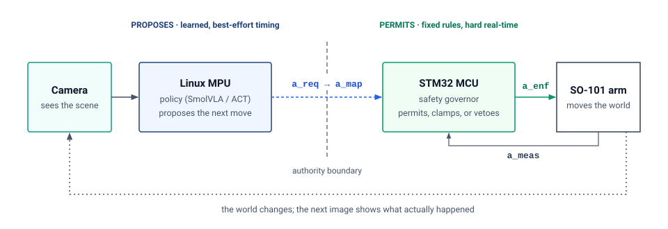

ETH ZURICH · SPRING 2027
Physical AI
Systems
Machine learning systems that sense and act.
Students train and evaluate a robot policy, constrain its actions with an independent governor, and measure how the physical system responds.
In preparation Meeting times, enrollment, and station qualification are pending.

The system
The robot operates through a sense → propose → permit → act → observe → revise loop. Camera observations inform a learned policy, which proposes the next move. An independent microcontroller checks whether to permit that move before the arm executes it. A new observation records the result and informs the next decision.
The proposed station combines a Seeed SO-101 arm, an overhead camera, and an Arduino UNO Q. The UNO Q runs the policy on its Linux processor and checks motor commands on its STM32 microcontroller. Staff qualify the station and provide the baseline firmware before student use.


The final deliverable is a Physical Release Dossier: the operating envelope, baseline comparisons, raw traces, failure evidence, and a defended release decision. A rigorous decision to withhold release can earn full marks. The competency card defines the skills assessed during the labs.
The semester
Each week pairs a systems seminar with a supervised hardware studio. Students read the assigned chapter before the seminar and predict the outcome of the lab experiment. During the lab, teams compare that prediction with measured behavior and record the results in a shared notebook. The notebook accumulates evidence for the lab assessments and the final release decision.
Physical limits and kinematics
Teams measure the arm, derive its kinematics, and compare the digital twin with the hardware.
Policy training and evaluation
Teams evaluate a learned policy, adapt it with recorded demonstrations, and test recovery from disturbances.
Command checks and release
Teams build the governor and test its response to declared faults. Each student defends a bounded release decision in the capstone.
The syllabus is the canonical source for weekly readings, checkpoints, assessment, and policies. Meeting times, rooms, credits, and enrollment details will be confirmed by course staff.
The lab sequence
The Getting Started lab introduces the station. The six labs then develop and evaluate the same physical system:
The digital twin
Teams measure the arm and test its kinematic model.
Simulation to real hardware
Teams compare predicted motion with measured motion and explain the differences.
Learned control
Teams compare a learned policy with the nonlearned baseline.
Real data and fine-tuning
Teams collect demonstrations and measure the effect of policy adaptation.
Stress-test the loop
Experiments measure the effects of action horizons and disturbances on recovery.
Build and attack the governor
Fault trials test command permission, freshness, refusal, and governor response.
CAPSTONE · PHYSICAL RELEASE DEFENSE
A release decision supported by measurements
Teams build a bounded task and exchange approved faults with a peer team. Each student defends the resulting release decision.Tools
The proposed tools support data collection, policy training, and experiments on the reference station. Staff select tested versions and supply starter assets. Qualification of the station determines the required policy and export path.
- LeRobot + PyTorch: These tools support demonstration datasets, training, and policy evaluation. Training runs on a workstation, and deployment is evaluated on the edge station.
- ACT and SmolVLA: These are candidate learned policies. ACT provides action chunking from images and robot state; SmolVLA adds language conditioning. Their station performance must be qualified.
- MuJoCo or PyBullet: Staff have not yet selected the simulator. The twin models the same arm and supports matched simulation and hardware trials.
- OpenCV + V4L2: These tools support camera calibration, image acquisition, and camera configuration.
- ONNX Runtime / INT8: The proposed edge deployment path requires checks of model export, numerical parity, memory use, and timing.
- STM32 C + the qualified Arduino/STM32 toolchain: The governor uses this toolchain to implement deterministic command permission, bounds, and watchdog behavior.
The station reference defines the hardware, wiring, and four action taps. Isaac Sim and Cosmos may support research extensions if staff qualify a suitable experiment.
Before week one
The course assumes working Python skills, introductory machine learning, basic linear algebra and probability, and first-year Newtonian physics. Prior experience with robot arms or microcontrollers is helpful. Staff provide the baseline firmware and support its extension.
- Read the Volume IV reader guide and The Causal Boundary.
- Review the course syllabus, including the assessment and teamwork expectations.
- Follow the Getting Started lab when the teaching team releases the qualified station instructions.
Release decisions require measured evidence. Each team must show which actions its system permits, which limits it enforces, and how it responds when those limits are tested.